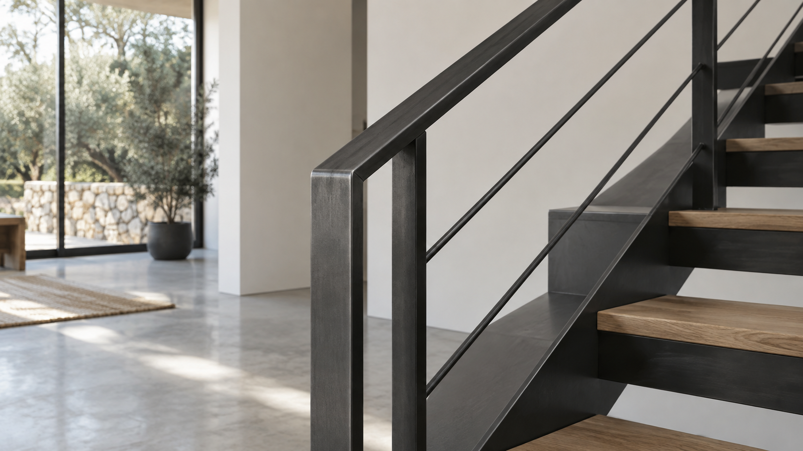
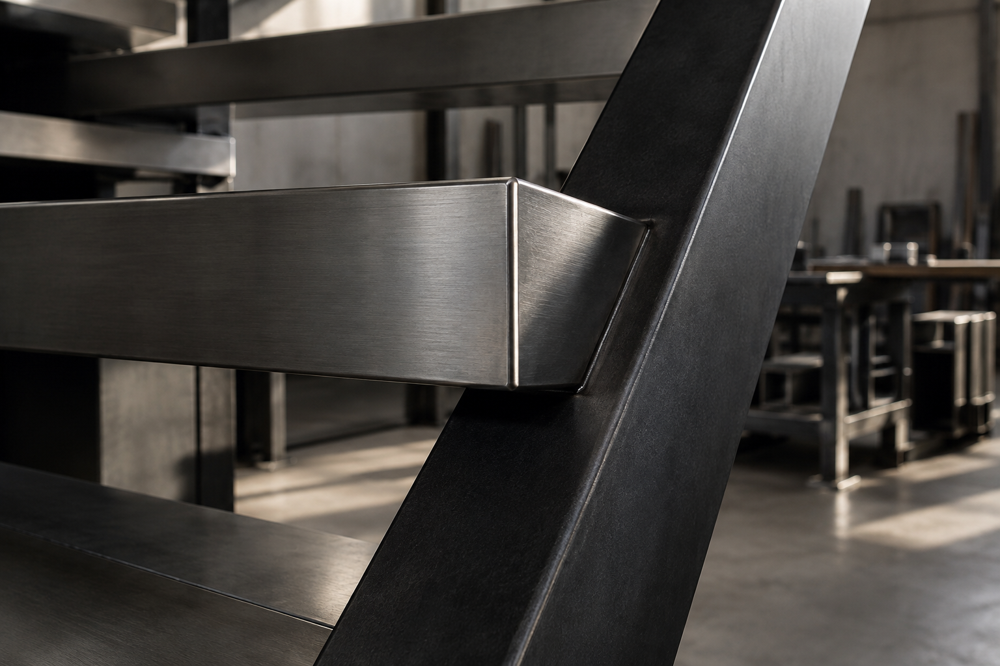

Serralleria
Carbó,a Vilafranca del Penedès des de 1989
Fabriquem i instal·lem portes, baranes, estructures i automatismes per a habitatges, comunitats i negocis. Del mateix taller neix Carbó Industrial, la nostra línia de fabricació metàl·lica per a empreses.

01 / Serralleria Carbó Particulars Baranes, escales, portes, automatismes i mobiliari a mida, fabricats al taller i instal·lats pel nostre equip. També atenem reparacions de portes i automatismes. Serveis per a particulars 02 / Una branca de Serralleria Carbó
Carbó Industrial
Sèries curtes. Peces exigents. Resposta industrial.
02 / Una branca de Serralleria Carbó
Carbó Industrial
Sèries curtes. Peces exigents. Resposta industrial.Fabriquem peces i conjunts en acer al carboni i inox 304/316, amb soldadura MIG/MAG i TIG, per a encàrrecs de producció de tercers. Coneix Carbó Industrial
Tens una avaria? Si falla una porta o un automatisme, pots explicar-nos directament què ha passat.
El taller, en xifres
Aquesta capacitat de taller i desplaçament ens permet treballar tant en una barana per a un habitatge com en una sèrie curta per a un fabricant.
Del taller a cada projecte
La major part de la feina es fa a Vilafranca i la rodalia; també treballem en projectes fins a Barcelona. Per a sèries industrials podem valorar encàrrecs d'arreu de Catalunya.
Coneix l'empresa
Serveis i capacitats
Consulta el servei concret si ja saps què necessites.
Treballs fets, no només possibilitats
Els projectes documentats mostren baranes, una passarel·la interior, una estructura d'ascensor, una porta de pàrquing i persianes motoritzades d'un negoci. A la branca industrial, el primer cas és una sèrie de deu gàbies fabricades per a un client.
Les fotografies originals dels projectes s'incorporaran després de verificar-les amb el client.
Parlem del teu encàrrec
Explica'ns una incidència, descriu el projecte que tens previst o envia els requisits d'una peça. El contacte s'adapta a particulars i empreses perquè la consulta arribi amb la informació adequada.